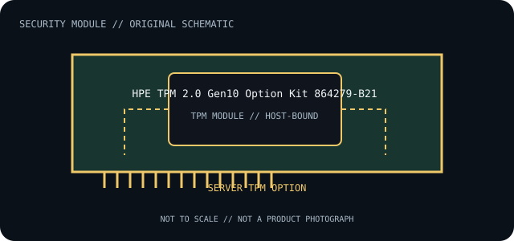

[ INDIVIDUAL COMPONENT // TRUSTED COMPUTING ]
HPE TPM 2.0 Gen10 Option Kit 864279-B21
HPE discrete TPM 2.0 option for supported ProLiant Gen10-family systems. HPE option-kit generation and server service documentation determine compatibility; it should not be treated as interchangeable with a Gen9 module.

IDENTIFICATION: Confirm the printed part number, revision and host-board model. The connector, TPM generation, protocol transport and firmware support below are separate compatibility constraints.
Specifications and compatibility limits
| Catalog subcategory | Security coprocessors |
|---|---|
| Exact model / part identifier | 864279-B21, TPM 2.0 Gen10 option kit |
| TPM protocol / command interface | TCG TPM 2.0 command interface mediated by HPE server UEFI and system software; no general-purpose crypto acceleration API or external I/O. |
| Physical connector / transport | Dedicated HPE system-board TPM option connector with platform-specific mounting, orientation and pinout. Use the installation instructions for the target server; neither connector appearance nor TPM version makes kits cross-generation compatible. |
| Host compatibility limit | Only HPE ProLiant models whose QuickSpecs/support documentation lists this Gen10 option kit. Confirm server generation, board revision, system ROM and feature configuration before procurement or replacement. |
| Firmware / OS compatibility limit | Host UEFI/system ROM must support the module and the selected TPM 2.0 mode; OS TPM-stack support is also required. HPE firmware/update and provisioning procedures are server-specific; protect recovery material and sealed-key dependencies. |
Installation, firmware and archival notes
- Before installation, record the module label/revision, host motherboard or server model, board revision, BIOS/UEFI version and TPM mode. Check the host’s own support list and installation diagram.
- Use ESD precautions and the documented module orientation. A physically fitting header may have different LPC/SPI signaling, pinout or voltage; never hot-plug a motherboard TPM module.
- TPM clear, replacement, firmware changes or mode changes can invalidate keys sealed to the previous TPM state. Back up recovery keys and follow the platform owner’s documented recovery procedure before service.
- This is a TPM, not a general-purpose cryptographic coprocessor or HSM: do not assume it offers PCIe/USB/network connectivity or vendor-specific bulk crypto APIs.
Where a manufacturer no longer publishes a current manual, preserve the source revision and verify the hardware against the original host platform before use.
Manufacturer and standard sources
- HPE — TPM 2.0 Gen10 option product catalogManufacturer documentation for module identification and host/platform limitations.
- HPE — TPM options and UEFI configuration guidanceAdditional manufacturer platform/support reference; check exact system and revision.
- TCG — TPM 2.0 Library SpecificationStandards reference for the TPM generation and command model; it does not certify this module’s electrical or platform compatibility.
Source scope is explicit: manufacturer documents identify the part and host constraints; TCG documentation defines protocol generation. Standards compliance does not guarantee a particular board/firmware combination.